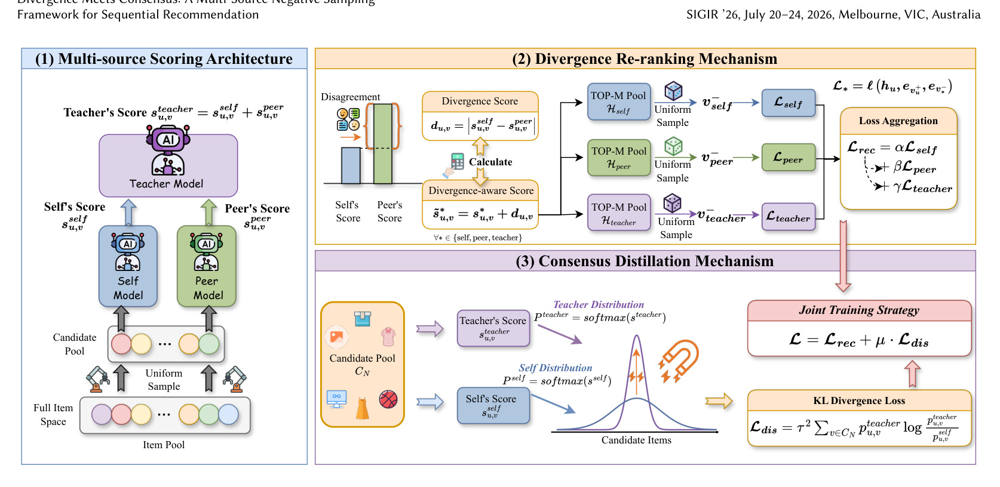
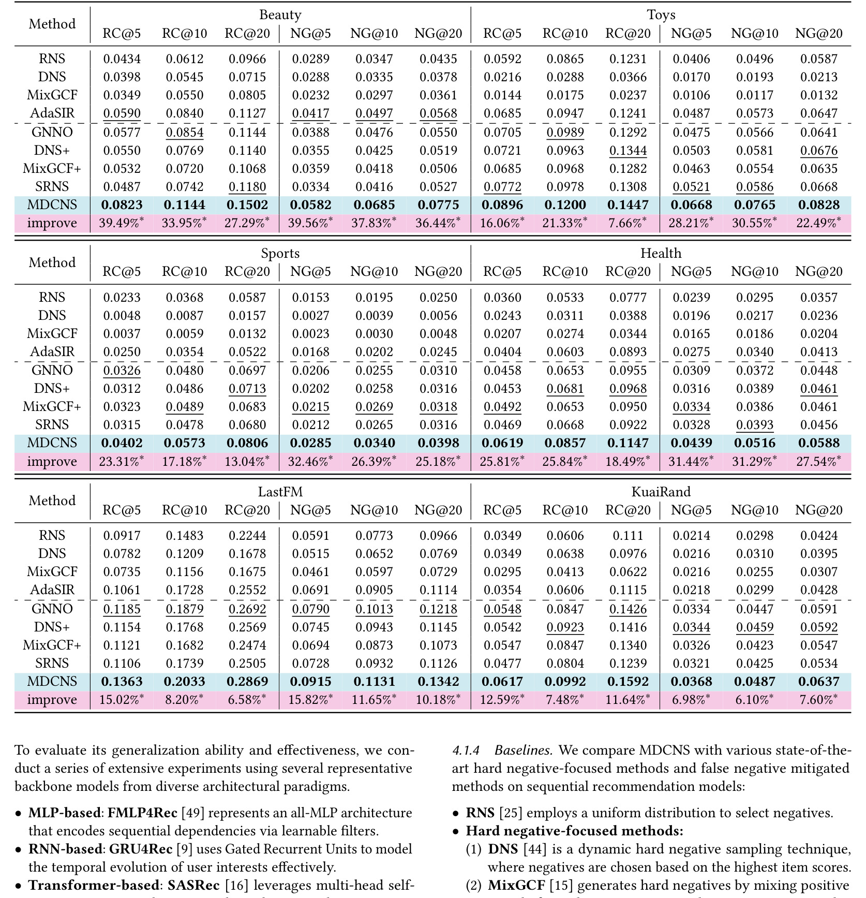
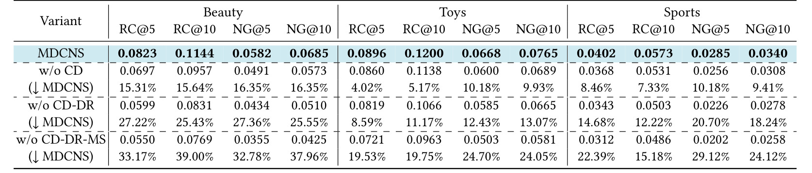
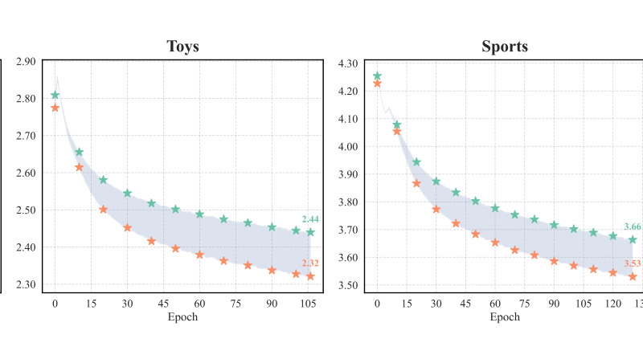

MDCNS：Divergence Meets Consensus: A Multi-Source Negative Sampling Framework for Sequential Recommendation
这里精读一篇 2026-05-19 提交到 arXiv 的论文《Divergence Meets Consensus: A Multi-Source Negative Sampling Framework for Sequential Recommendation》。中文可以叫《分歧遇见共识：面向序列推荐的多源负采样框架》。
论文链接：arXiv:2605.19651
作者：Yuanzi Li, Lingjie Wang, Jingyu Zhao, Zihang Tian, Yuhan Wang, Lei Wang, Xu Chen
机构/团队：Renmin University of China / Shandong University / Peking University。
公开日期：2026-05-19，来源：arXiv cs.IR，arXiv ID：2605.19651。
代码/项目页：PDF 与 arXiv 页面本轮未核验到独立代码仓库。
0. 导读
MDCNS 是今天最纯粹推荐系统的一篇，聚焦隐式反馈序列推荐中的负采样。序列推荐训练通常只有正反馈，例如点击、购买、观看；未点击或未出现的 item 不一定是真负例。为了让模型学会区分，训练时需要采负样本。传统 hard negative sampling 会用当前模型挑“看起来容易混淆”的负例，但这会带来三个问题：采样和模型更新耦合，容易形成自我强化；候选范围被当前模型局部视野限制，负例多样性不足；全量打分寻找 hard negative 又非常昂贵。
MDCNS 的设计借用了维果茨基的 Zone of Proximal Development 思想，把学习者放在 Teacher-Peer-Self 三方结构中。Self 是当前待训练模型，Peer 提供不同视角，Teacher 提供集成或更强信号。框架先做 multi-source scoring，再用 divergence re-ranking 挑出 self 与 peer 判断分歧较大的负例，最后用 consensus distillation 把 teacher 共识蒸馏回 self。这个设计试图同时解决负例多样性和训练稳定性。
这篇论文对工业推荐有现实意义。负采样看似是训练细节，但会影响召回、序列建模和排序模型的泛化。很多模型效果瓶颈不在 backbone，而在训练样本如何构造、hard negative 是否偏、计算预算是否浪费。MDCNS 的启发是，负采样不应只依赖当前模型的“自我感觉”，而应引入外部视角和共识约束。
1. 背景与问题
隐式反馈推荐没有显式负标签。用户没点击某个 item 可能是不喜欢，也可能是没曝光、没看到、价格不合适或当时无需求。训练序列推荐模型时，常见做法是从未交互 item 中采样负例，再用 BCE 或 BPR 类损失优化。随机负采样简单但信息量低；hard negative 信息量高，但如何选 hard negative 是难点。
Self-guided hard negative sampling 用当前模型给候选 item 打分，选高分但非正例的 item 作为负样本。它的风险是自我循环：模型当前误判哪里，采样就集中哪里；更新后继续围绕这个局部区域采样，可能陷入 local optimum。第二个风险是多样性不足，模型只看到自己认为困难的小范围 item，而忽略其他潜在决策边界。第三个风险是计算昂贵，全量 item scoring 对大规模推荐不现实。
MDCNS 把问题重构为多源学习。Teacher 提供更稳定或更强的全局信号，Peer 提供与 Self 不同的模型视角，Self 提供当前学习状态。好的负例不只是 Self 高分，还应处在 Self 与 Peer 观点有分歧、同时 Teacher 能提供共识约束的区域。这样可以把采样从单模型局部搜索变成多模型协作。
从推荐系统历史看，这类方法和 ensemble、co-training、distillation 有联系，但重点落在 negative sampling。它不是把多个模型预测简单平均，而是把多源信号用于构造更有价值的训练负例，并在后续用 KL divergence 做共识蒸馏，使额外计算预算不仅用于采样，也反哺模型学习。
2. 核心方法
MDCNS 包含三个模块。第一是 multi-source scoring。系统构造候选负例池后，不只用 self model 打分，还引入 peer model 和 ensemble teacher model。Self 代表当前模型能力，Peer 代表不同初始化或不同训练视角，Teacher 汇总更稳定判断。多源打分的目的是打破 self-guided sampling 的闭环，让负样本选择不完全由当前模型参数决定。
第二是 divergence re-ranking。框架利用 self 与 peer 的预测差异衡量负例信息量。若两个模型对某个 item 判断差异较大，说明它可能处在当前决策边界附近，能提供更多训练信号。相比只选 self 高分 item，divergence 能提升采样多样性，避免所有 hard negative 都来自同一局部区域。论文把 divergence 与 ZPD 类比为学习者在他人帮助下能触达的区域。
第三是 consensus distillation。Teacher 不只是采样时的参考，还通过 KL divergence 把共识知识蒸馏给 self。这样做有两个效果：一方面让 self 不只被单个负例标签驱动，而能学习 teacher 对候选分布的软判断；另一方面提高计算资源利用率，既然已经维护 teacher/peer 信号，就不应只用来排序负样本，而应进入训练目标。
框架可以配合不同序列推荐 backbone 和损失函数。论文在 SASRec 等模型、BCE 与 BPR 训练设置下做实验，说明 MDCNS 不是绑定某个模型结构。对于工业系统，这点很重要，因为负采样模块若能作为训练管线组件接入多个 backbone，落地价值会高于单一模型改造。
3. 图表解读

图 2 是 MDCNS 总框架。左侧 multi-source scoring 从 Self、Peer、Teacher 三个角度生成相关性信号；中间 divergence re-ranking 根据模型分歧挑选更有信息量的负例；右侧 consensus distillation 用 teacher 共识约束 self。这个图把方法的因果链讲清楚：分歧负责探索，多源负责破除自循环，共识负责稳定学习。若只保留其中一环，方法就会退化成普通 hard negative 或普通蒸馏。

表 3 是六个数据集上的主结果。它比较 MDCNS 与多种负采样方法，指标包括 Recall 和 NDCG。表格整体显示 MDCNS 在多数数据集和指标上领先或接近最优，说明多源负采样对不同商品域具有一定泛化。阅读这张表时应关注跨数据集一致性，而不是单个数据集的最高值，因为负采样方法很容易对某个稀疏度或流行度分布过拟合。

表 6 是消融实验，比较去掉 multi-source scoring、divergence re-ranking 或 consensus distillation 后的性能下降。它直接回答各模块是否必要。若去掉 divergence，负例多样性下降；若去掉 consensus distillation，teacher 信号不能稳定传回 self；若去掉多源信号，方法会回到 self-guided 的闭环风险。这个表支撑了论文标题中的 divergence 与 consensus 两个关键词。

图 3 展示训练 loss dynamics。负采样方法除了最终指标，还要看训练是否稳定。若 hard negative 过难或分布抖动大，模型 loss 可能震荡，影响收敛。图中 MDCNS 的 BCE recommendation loss 和采样相关损失轨迹用于说明多源采样并未导致训练失控。对工程实践来说，稳定性和最终效果同等重要，因为训练不稳定会增加调参成本。
4. 实验与结果
论文在六个真实数据集上评估，包括 Amazon Sports、Beauty、Toys、Health 等域，也包括其他公开序列推荐数据。基础模型覆盖多个 sequential recommendation backbone，训练损失包括 BCE 和 BPR。指标是 Recall 和 NDCG。摘要称 MDCNS 在六个数据集和五个 backbone 上 consistently outperforms state-of-the-art negative sampling methods。
主结果表说明 MDCNS 不只是增强 SASRec 的单点技巧，而能迁移到不同模型和数据。BCE 设置下的表 4、BPR 设置下的表 5 进一步说明它对损失函数也有一定鲁棒性。弱到强设置表明即使 peer 较弱，框架仍可能提供有用分歧，但效果会受 peer 质量影响。
消融实验是理解论文的关键。去掉任一模块都会导致性能下降，说明多源、分歧和共识不是简单堆叠。尤其 consensus distillation 的作用容易被忽略：很多 hard negative 方法只关注“采到什么”，但 MDCNS 还关心“采样过程中产生的教师知识如何被利用”。这使额外模型计算不只是采样开销，而是训练信号的一部分。
计算成本方面，论文批评全量 hard negative scoring 代价高，MDCNS 通过候选池、多源评分和蒸馏提高资源利用率。但真实工业规模下，Teacher 和 Peer 的维护成本仍然需要仔细评估。离线训练可以接受多个模型协作，在线增量训练或小时级更新则要看资源预算。
5. 我的理解
MDCNS 的核心价值是把负采样从“找当前模型最容易错的负例”改成“找多视角下最适合学习的负例”。这比单纯 hard negative 更符合推荐训练实际。当前模型的错误不一定都是最有价值的训练信号，有些只是噪声或流行度偏置；Peer 的分歧能增加探索，Teacher 的共识能避免被噪声牵着走。
我也喜欢论文把采样和蒸馏结合起来。工业推荐训练中常常会有 teacher、ensemble、large model 或线上日志信号，但这些信号未必进入负采样环节。MDCNS 提供了一种思路：teacher 不只给 soft label，也可以参与决定哪些未交互 item 值得作为负例。这比把 teacher 分数最后蒸馏给 student 更前置。
可能被高估的地方在于，论文数据集主要是公开序列推荐数据，和真实曝光日志仍有差距。在真实系统中，负样本集合应考虑曝光、位置、价格、库存、活动、风控和用户可见性。未曝光 item 直接当负例会引入偏差。MDCNS 改善的是采样信息量，但如果候选负例池本身不符合曝光机制，仍然会学到偏差。
对大模型方向的启发是，RLHF/RLVR、对比学习和偏好优化也面临“负例怎么来”的问题。Self-generated negatives 容易自我循环，多模型分歧和教师共识可能同样有用。DelTA 这类 token credit assignment 关注响应内部哪些 token 该强化，MDCNS 则关注训练样本层面哪些负项该学习，两者在思想上有呼应。
6. 工程启发与复现建议
复现时可以先在已有 SASRec 训练管线中加入 Peer。Peer 不必一开始是大模型，可以是不同初始化、不同数据增强或上一版本模型。Teacher 可以用 EMA ensemble 或更强离线模型。先构造候选池，再记录 self score、peer score、teacher score、divergence 和最终采样概率。评估时不仅看 Recall/NDCG，还要看负例流行度分布、类目覆盖、与正例相似度和训练耗时。
线上工业落地时，负例池必须来自曝光或可推荐集合。对于未曝光 item，应区分“真未见”和“可见未点”。可以在 MDCNS 外层加曝光约束，只在同一请求或同一时间窗内的可见候选中做多源采样。否则模型可能把用户根本没机会看到的 item 当作负反馈，损害长期泛化。
计算上，可以采用分阶段策略。每日离线训练使用完整 Teacher-Peer-Self，小时级增量训练只使用轻量 Peer 或缓存 teacher score。也可以把 Teacher 分数离线预计算到 item/user 分桶，训练时近似读取。关键是先证明多源采样带来的指标提升超过额外训练成本。
7. 局限与风险
- 负例池若不考虑曝光机制，仍然会引入隐式反馈偏差，多源采样不能替代因果曝光建模。
- Teacher 和 Peer 的质量决定上限。若外部模型本身有偏，divergence 可能放大错误区域。
- 计算成本不低。维护多个模型、打分候选池和做蒸馏会增加离线训练复杂度。
- 公开数据集收益不一定外推到超大规模线上系统，尤其 item 数、冷启动和实时更新压力不同。
- 采样策略可能影响探索与多样性。过度选择“有分歧”的 item 也可能忽略简单但必要的边界样本。
8. 后续跟进
- 跟进是否发布代码，重点看 candidate pool 构造、peer/teacher 更新频率和采样复杂度。
- 在已有序列推荐训练中实现最小 Peer divergence 负采样，对比 random、popularity、self-hard。
- 加入曝光日志约束，验证 MDCNS 在真实曝光负例和未曝光负例上的差异。
- 关注多源负采样与生成式推荐 SID 训练、DPO 偏好优化的结合空间。